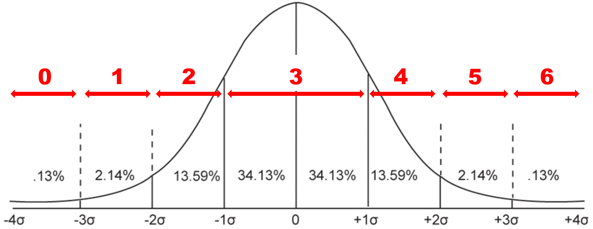

A Generic Roll-Playing System that Doesn't Suck.
The purpose of this system is to have a bare-bones RPG that can be used to either a) spin up a game quickly, or b) serve as the foundation for a more built out game on top of it. I will leave notes inline as I go, but there are two things it is trying to solve. One is downtime at the table, every minute someone is looking up a rule, or more often consulting their sheet to see what skills even exist that may cover this scenario, is time that the game grinds to a halt. So it is built from the ground up to be a system where all the reference materials for running it fit on a page, and the players need a playing card at most. Second this system is designed to serve as the base resolution layer for any type of RPG on top, and as such has no dedicated combat rules in it. If you want to run a big shooting game, then that probably makes sense as something to bolt on, but there are lots of options for mechanics in games that are not "shoot the man" or more recently "track my social bonds with the man". So if you were trying to get your 'Drive to Survive' game, or 'Stardew Valley' knock off going, this is the place.
To start with, you need to understand the world this is taking place in, and what your place in that world would be. So the GM needs to tell you what the background is, for you to start with character creation.
Fill in the following (not necessarily in order)
What is your characters name?
Height, Weight, Sex, Race, Species, Religion, Caste, Scars, Tattoos, Hair/Eye colour, etc. These will differ in importance based on the campaign, but at least in broad terms you should put down how someone in this world would tell you apart visually from someone else based your appearance, and any immutable physiological facts about you. So saying tall or overweight is fine, but if elfs and gnomes are literal separate specifies in your world, you should mark which. Adding a picture also helps a lot.
Put down a few sentences of how you got to the point in time you are starting the campaign. Like a sentence for birth through adolescence, another through end of education, and whatever you need to cover what came after that. It does not need to be extensive, but should cover off who your character is.
Austin was born in Western Canada to two English speaking science profs, and raised in a few different cities across the Canadian prairies as his family found better roles in different universities. Graduated from a public high school in Saskatoon, having focused mostly on theatre & academics, and ended up with a MEng then MBA from UBC. Currently lives in Seattle with his girlfriend Jullie, working at Microsoft, and enjoys amateur dramatics in his spare time.
What is your characters job, the thing they get paid for and are good at? Should be 1-3 words, like 'accountant' or 'police sergeant' or 'mercenary'.
Next you need to choose your characters mechanical elements.
First you need to set your characters attributes, they are used for resolving actions and checks during the game. Your character has seven attributes that all start at 1. You have 15 points to increase them, costing one point to raise any attribute by one, and you cannot increase an attribute over five.
The "Average" attribute is 3, increasing and decreasing in standard deviations. So 2 is bad, 1 is terrible, 4 is good, 5 is incredible.
The seven attributes are as follows:
| Attribute | ABRV | Description |
|---|---|---|
| Brawn | BRN | How large, strong, and tough you are. Used for lifting, pulling, breaking, and dealing with the consequences of physical harm. |
| Athletics | ATH | Represents how in shape and athletically capable you are. Used for running, swimming, jumping, swinging, and things relating to your stamina. |
| Hand-Eye Coordination | HEC | Represents your hand-eye coordination..... Used for shooting, driving, flying, playing instruments, and lock picking. |
| Awareness | AWR | Represents your ability to react quickly to events and stimuli. Used to determine if you can react to sudden things in time, to dodge, and to notice physical things. |
| Logic | LOG | Represents your IQ, or ability to apply formal logic and reason. Used for deduction, programming, solving puzzles, learning, and understanding concepts. |
| Empathy | EMP | Represents you EQ, or ability to read and understand other people. Used for persuading, determining others intent, and understanding other people. |
| Mindfulness | MIN | Represents how in control you are of your emotions, and self aware you are of yourself. Used for resisting negative mental states or stress, or resisting pain and other impulses. |
Next you should calculate and fill in your number of "strikes". These represent your health, or ability to avoid negative consequences during play. Total up your BRN, AWR, & MIN, and compare the total to the following Table
| Attribute | 0-6 | 7-8 | 9-10 | 11-12 | 13+ |
|---|---|---|---|---|---|
| Strikes | 1 | 2 | 3 | 4 | 5 |
Finally you should select modifications. By default you have two points to spend on the following table. Taking negative modifications will allow you to get more then two points of positive modifications.
| Name | Cost | Impact |
|---|---|---|
| Special Skill | 2 | Select a skill that you character has (e.g. Driving Cars, Flying Fighter Jets, Running Marathons, Auditing Financial Statements, etc.). The skill should include the thing you do, and what it applies to (Shooting Sniper Rifles no just Shooting). Gain +2 to all skill checks using that skill. Can be taken twice for a given skill, for +4. |
| Positive Attribute | 4 | Add 1 to an attribute, this cannot take an attribute over 5 without GM permission. This can be taken multiple times. Note this can only be taken at character generation without GM permission. |
| Negative Attribute | -4 | Subtract 1 from an attribute, this cannot take an attribute under 1 without GM permission. This can be taken multiple times. Note this can only be taken at character generation without GM permission. This is often used once to represent a middle aged character, or twice to represent an old one. |
| Heightened Sense - Sight | 2 | You have excellent vision. Gain +2 to REA tests, where the threat is visible. Do not apply penalties to checks for objects/targets being to small to see, or to far away (e.g. if a skill test would normally be hard to spot a symbol on a wall since it is 50m away, treat it as normal instead) |
| Heightened Sense - Hearing | 2 | You have excellent hearing. Gain +2 to REA tests, where the threat is audible, and +2 for any skill tests where you are trying to detect or understand noises. |
| Heightened Sense - Taste | 1 | You have an excellent sense of taste. Gain +2 to REA tests, where you can taste the threat, and +2 for any skill tests where you are trying to detect or understand flavour. |
| Heightened Sense - Touch | 1 | You have an excellent sense of touch. Gain +2 to REA tests, where you can feel the threat, and +2 for any skill tests where you are trying to detect or understand something tactile. |
| Heightened Sense - Smell | 1 | You have an excellent sense of smell. Gain +2 to REA tests, where you can smell the threat, and +2 for any skill tests where you are trying to detect or understand and aroma. |
| Blind | -2 | You are blind. Reduce HEC to 0. In addition to the base 2 negative modification points, gain another 4 for every point of attribute that you lost. |
| Deaf | -4 | You are deaf. |
| Partially Paralyzed | -4 | You are in a wheel chair, and are reliant on it to move around. BRN & ATH cannot be over 4. This can also be used to model other mobility disabilities. |
| Fully Paralyzed | -8 | You are in a motorized wheel chair, and are reliant on it to move around. BRN & ATH cannot be over 2. |
| Attractive | 2 | You are attractive. Gain +2 to any social skill checks with someone who would be sexually interested in you (Consider Sex, Orientation, and Species). Test either needs to be in person, or with someone that has meet you in person before, and knows who you are. You are also more memorable, making NPCs remembering you easier, and you being able to go unnoticed harder (increasing or decreasing the difficulty on skill checks). Can be taken a second time, increasing the benefits to +4, and making NPCs notice you immediately, and rarely forget you were there (increasing or decreasing the difficulty on skill checks). |
| Disfigured | -2 | Your appearence is disturbing to others. This will make all social checks with people who can see you harder (increasing the difficulty on skill checks). Can be used to model being ugly, heavily scared, or otherwise malformed. |
These are the rules for playing the game as a player. Some items relevent just to the GM are in the next section.
The core mecanic of the game is a skill check. Any time you are trying to do something that has a real chance of failing you
@startuml !include file.pu!TAG2 Alice->Bob : hello @enduml